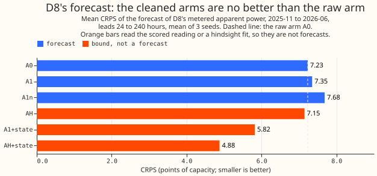
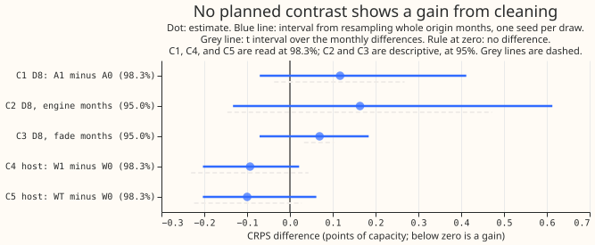
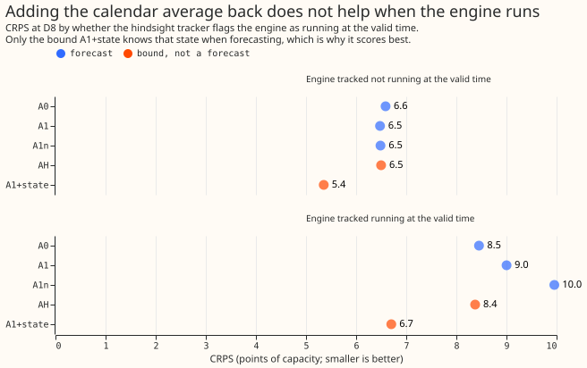
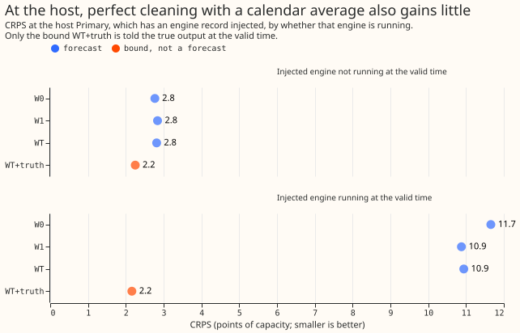

Does a demand forecast trained on D8's reading with the gas engine removed, plus a climatology of the engine added back at forecast time, forecast D8's metered apparent power better than a forecast trained on the raw reading?
This experiment asks whether a gas engine's output can be taken out of one substation's recorded demand before a neural network learns from it, and added back as an average when forecasting. The substation, D8, is one of the 16 Primary substations (the substations that supply the local distribution network) that this research forecasts. A gas engine, a set of generating units that run on and off, is connected behind D8's meter, so its output is included in D8's recorded power. An on and off tracker, from experiment 694, infers from D8's half-hourly reading alone how many of the engine's units are running.
We compared a neural network trained on the raw reading with one trained on the cleaned reading plus an add-back. Arm A0 is the neural network trained on the raw reading. Arm A1 removes the tracked engine output from the training data and from the recent-power inputs, and adds the engine back to each forecast as an average: for each half-hour of the day, separately for weekdays and weekends, the share of past half-hours in which each number of units ran, over the previous 12 weeks with recent weeks weighted more. Each arm is refitted at the start of each of 8 months from 2025-11 to 2026-06, with 3 random seeds (starting points for the training's random numbers) per refit. The score is the CRPS (continuous ranked probability score, in which smaller is better) of the forecast of D8's metered apparent power. Apparent power is in MVA (megavolt-amperes), and scores are in points of capacity, which are percentage points of D8's effective capacity of 10.379 MVA.
No gain was found, and cleaning plus a calendar add-back is not worth porting. The verdict is
not supported, branch 8 of the pre-registered verdict table. Branch 8 is the default that applies
when no earlier branch does: no leakage test failed, the reproduction gate G0 (a refit of A0 must
match experiment 677's stored result) and the tracker gate G1 (the tracker must find an injected
engine) passed, the three seeds agree on the sign of C1, and C1 shows no gain. The planned contrast
C1, A1 minus A0, is +0.117 points, with a 98.3% interval from -0.070 to +0.412 and a t interval from
-0.037 to +0.268. A gain needs both intervals below zero and an estimate of at least 0.398 points
(5.5% of A0's own score). The lower bound of -0.070 rules out any gain above about 0.07 points, so
the predicted gain of 0.3 to 1.0 points is ruled out.
A post hoc reading, not pre-registered, suggests that A1 is probably about 0.1 points worse over all rows. It averages the 3 seeds and then resamples whole origin months, which gives +0.036 to +0.245 for C1 at 98.3%. A bootstrap over only 8 months under-covers, so the reading is suggestive. The library interval is 2.3 times wider (0.48 against 0.21) mainly because it draws one seed per resample, and the t interval stays the decision interval.
One open question is whether the engine's state can be forecast from information available at the forecast origin. An upper limit that reads the engine's state at the valid time (the time being forecast) lowers the error by 1.4 to 2.4 points against the raw arm A0, but no forecast has that state. In a private analysis of one 43-day record of an engine's output and of the tracker's labels for D8, the state's persistence improved the Brier score of "running" within about a day, and no forecastable input beat a calendar climatology beyond a day, except possibly a wind forecast out to a few days. Two options follow, and neither is committed: part 3 of this series, which gives the neural network origin-time engine-state features (the tracker's state at the lag times and the engine's trailing running share for the forecast half-hour), and a pre-registered test of a wind forecast as a predictor of the engine's state at days 2 to 5.
Predictions against outcomes
Three of the six pre-registered predictions fail, and two hold only in part. "Bound" is defined under "Terms used in the tables below".
| Prediction | Outcome |
|---|---|
| P1: A1 lowers CRPS by 0.3 to 1.0 points and the normalised MAE of the median by 0.5 to 1.5 | Fails: CRPS +0.117, MAE +0.120 |
| P2: the gain is at least as large in the fade months (2026-03 to 2026-06) as in the engine months (2025-11 to 2026-02) | Fails: neither is a gain; C2 is +0.164 and C3 is +0.069 |
| P3: AH (cleaning with hindsight) beats A1 by under 0.2 points | Fails by 0.003: AH minus A1 is -0.203 (interval -0.363 to -0.050), a bound |
| P4: at the host, WT beats W0, and W1 recovers at least half of that gain | Holds in the estimates (WT minus W0 -0.100, W1 minus W0 -0.093, so W1 recovers 93%), but both intervals cross zero, so the ratio of the two estimates is not resolved |
| P5: the state at the valid time lowers CRPS by 2 points or more | Holds for AH+state (AH+state minus A0 -2.354), fails for A1+state (A1+state minus A0 -1.413); both are bounds |
| P6: no other Primary moves | Holds: all 15 intervals include zero |
Results
Terms used in the tables below.
- Row: one half-hour of valid time in one forecast. All counts of rows are per seed.
- Bound: a system that reads the scored reading, a hindsight fit, or the true injected output, so that no forecast can match it.
- AH: arm A1 with the tracker fitted and smoothed with hindsight, to 2026-06-30. The two eras of the tracker are D8's reading before 2025-03-24 and from then on.
- A1n: arm A1 with the no-fold cleaning (the engine's output is added to the reading without allowing for the reading's fold, because apparent power is never negative) and a signed add-back clamped at zero. The export branch is the part of the fold where the demand level is below the engine's output, so the engine exports power.
- Host D4 and injected: D4 is a Primary into which we added (injected) a real engine's recorded output. W0 is the neural network trained on D4's raw injected reading, W1 is the A1 method on it, and WT is the W0 network plus the add-back of the true injected engine's calendar average.
- +state arms: A1 or AH with the tracked engine state at the valid time added back, and WT+truth adds the true injected output at the valid time.
- Origins: the contract origin is 12:00 UTC on the forecast day, and the native origin of the neural network is 09:00 UTC, three hours earlier.
- Engine months and fade months: 2025-11 to 2026-02 and 2026-03 to 2026-06, when the engine's effect on D8's reading fades. Contrasts C2 and C3 split by the month of the forecast origin, and the slices in the text split by the month of the valid time.
- Step 9a: experiment 677's raw-reading neural network at monthly refits.
The cleaned arms do not beat the raw arm, and only the bounds score much lower. Every row is scored against the metered apparent power at D8, or the injected reading at the host, for leads of 24 to 240 hours from the 12:00 UTC forecast origin, origins 2025-11-01 to 2026-06-30, mean of 3 seeds. "MAE" is the normalised mean absolute error of the median forecast. The reference rows come from experiment 677 on its 80,688 shared rows at D8, a different row set from the 102,310 rows scored here.
| System | What it is | CRPS | MAE |
|---|---|---|---|
| A0 | Raw reading, the control | 7.232 | 13.252 |
| A1 | Causal cleaning plus the calendar add-back | 7.349 | 13.372 |
| A1n | A1 with the no-fold cleaning and a signed add-back | 7.683 | 13.891 |
| AH (bound) | Hindsight cleaning to 2026-06-30 | 7.146 | 12.942 |
| A1+state (bound) | A1 plus the tracked state at the valid time | 5.819 | 10.386 |
| AH+state (bound) | AH plus the tracked state at the valid time | 4.878 | 8.830 |
| W0 | Host, raw injected reading | 4.489 | 7.447 |
| W1 | Host, causally cleaned plus add-back | 4.396 | 7.390 |
| WT | Host, raw neural network plus the true engine's calendar add-back | 4.389 | 7.401 |
| WT+truth (bound) | WT plus the true injected output at the valid time | 2.232 | 3.953 |
| Step 9a (reference) | Stored control on experiment 677's rows | 7.100 | 13.002 |
| Manual heuristic (reference) | Stored | 7.934 | 14.135 |
| Climatology on the raw reading (reference) | Stored | 8.581 | 16.189 |

No planned contrast shows a gain, and the host's gain of about 0.1 is within noise. C1, C4, and C5 are read at 98.3% (a Bonferroni split of 5% over three), and C2 and C3 are descriptive at 95%. Each row gives the estimate, the interval from resampling whole origin months with one seed per draw, and the t interval over the monthly differences. A negative value is a gain.
| Contrast | Estimate | Bootstrap interval | t interval | Seeds |
|---|---|---|---|---|
| C1: A1 minus A0, D8 | +0.117 | -0.070 to +0.412 | -0.037 to +0.268 | +0.182, +0.062, +0.108 |
| C2: C1 in the engine months | +0.164 | -0.133 to +0.613 | -0.146 to +0.472 | +0.306, +0.115, +0.070 |
| C3: C1 in the fade months | +0.069 | -0.071 to +0.184 | +0.033 to +0.103 | +0.055, +0.007, +0.146 |
| C4: W1 minus W0, host | -0.093 | -0.203 to +0.021 | -0.231 to +0.043 | -0.087, -0.085, -0.108 |
| C5: WT minus W0, host | -0.100 | -0.203 to +0.062 | -0.224 to +0.027 | -0.119, -0.064, -0.116 |
| MAE of the median, A1 minus A0 (95%) | +0.120 | -0.487 to +0.788 | -0.526 to +0.720 | +0.287, -0.019, +0.094 |

The bounds, and every contrast that contains a bound, show where a forecast could gain, and none is a forecast. AH minus A1 is -0.203 (95% interval -0.363 to -0.050). A1+state minus A0 is -1.413 (-2.245 to -0.550), AH+state minus A0 is -2.354 (-3.488 to -1.344), and WT+truth minus W0 is -2.257 (-2.583 to -1.915). W1 minus WT is +0.007 (-0.052 to +0.069), so the causally cleaned host arm and the perfectly cleaned host arm are indistinguishable. A1n minus A1 is +0.334 (+0.197 to +0.457); A1n is a mis-specified variant, so its result says only that the fold is needed.
A1 is worse than A0 on rows where the engine is tracked as running, on cold winter nights, and over the valid times of 2026-03 to 2026-06 as a whole. On the 35,302 rows per seed that the hindsight tracker flags as running, CRPS is 8.453 for A0 and 9.002 for A1. On the 67,008 rows flagged as not running, it is 6.588 and 6.478. On cold winter nights it is 7.137 and 7.593, and for valid times in 2026-03 to 2026-06 6.439 and 6.492. The origin-month contrast C3, +0.069, splits by origin month and not by valid-time month, which explains the different size. A1 scores better on sunny middays of 2026-03 to 2026-06 (6.856 against 7.061). The median of A1 sits 12.9 points above the reading on running rows, against 10.0 for A0, and the 90% band of A1 is 62.4 points wide against 51.3 for A0, so A1 over-covers the low tail: the share of readings below the q05 forecast is 0.013 for A1 and 0.059 for A0.

A calendar average cannot say which days the engine runs, which is consistent with the add-back
widening the forecast. No arm separates the add-back from the cleaning, so the cause is not
isolated. In each engine month the add-back's running share was 0.37 to 0.38, against hindsight
shares of 0.36 to 0.48, and it lagged the fade: in 2026-03 it was 0.386 against a hindsight share of
0.267 (printed/e00695_audit_out.txt). The add-back mixes two levels, with and without the engine,
in every forecast. At the host, perfect cleaning with a perfect calendar average gained no more than
the causal tracker did, so the host does not show the tracker as the limit. At D8, the hindsight
tracker (AH) scores 0.203 points better than the causal one (A1), and AH scores 7.146 against A0's
7.232, so the tracker may be some of the limit at D8 as well.

Checks
- Median minus mean forecast. The check looks for a spread that shifts the forecast: a positive
gap means the quantiles' mean sits above the median. The neural networks output 11 quantiles and
no mean, so the mean is the mean of the 11 quantile values. At D8 the mean of the quantiles minus
the median is +1.627 points for A0, -2.774 for A1, and -1.766 for AH; across the other 15
Primaries on A0's output it is +0.155 to +0.996 except +2.648 at D12 and +8.562 at D15, which were
not investigated. A1's gap is 4.4 points below A0's, the widening described above
(
printed/e00695_median_mean.txt). - Error of the median beside the CRPS contrasts. The MAE contrast is +0.120 (interval -0.487 to +0.788), the same sign as C1. The mean error of the median at D8 is +0.24 for A0, +2.00 for A1, and +1.15 for AH.
- Gate G0 (reproduction). Refitted A0 scores 7.231588 at D8 against 7.231586 for the stored step 9a, on 102,310 shared rows (a gap of 1.6e-6 before rounding). The audit found a paired difference of 0.000 at every seed.
- Gate G1 (tracker in the scored era). At the host, the causal tracker's F1 is 0.785, precision 0.998, and recall 0.647, and it flags 0.03% of un-injected half-hours. The pre-registered bars were F1 0.60, precision 0.50, and at most 3% false flags. G1 passed before any neural network was fitted.
- Sign check. Of the half-hours with a unit running, 42.1% differ by more than 1 MVA between the
folded and the no-fold cleaning (0.35 to 0.51 by fold), above the 10% trigger, so arm A1n ran
(
printed/sign_check.txt). - Identity control. Arm A1id sends D8's raw row through A1's cleaned-row route with cleaning
disabled, for fold 2025-11 and seeds 0 to 2. Its quantiles match A0's to a maximum of 8.8e-5 of
capacity (
printed/e00695_identity_compare.txt). - Leakage and weather. Every leakage test gives a change of exactly 0. The scorer reads all 8 per-fold prediction logs of each of the 6 fitted arms (A0, A1, A1n, AH, W0, and W1; the other systems reuse these fits), and finds 242 origins (30, 31, 31, 28, 31, 30, 31, and 30), each asserted to use a weather run at or before the origin.
- Audit triggers are the conditions under which the
ml-experimentskill requires an independent audit: a failed control, a result that contradicts its prediction, a quantile contrast and an error contrast that disagree, a flip when one site is left out, a nested arm that beats its container, an interval much wider or narrower than a sister experiment's, and a later design that depends on the result.- Trigger 2 (the result contradicts the prediction) fired: A1 lost 0.117 points where the prediction was a gain of 0.3 to 1.0.
- Trigger 6 (interval width) fired: the C1 interval is 0.48 wide, against 0.10 for experiment 677's two sister arms, which differ only in injected shifts and barely differ at D8. A contrast of one A0 seed against another is 0.36 to 0.61 wide, so seed noise explains the width.
- Trigger 7 applies to part 3, if that is run, because its design would depend on the sign of C1.
- Triggers 1, 3, 4, and 5 did not fire.
- Audit findings (an Opus audit,
printed/e00695_audit_out.txt; none rejected):- Every headline number reproduced, so branch 8 stands.
- The post hoc seed-averaged interval suggests that A1 is a little worse; the page labels it post hoc.
- The scorer's D8 row in the per-Primary table scored A1 without the add-back; the row is dropped.
- The scorer read only the last fold's weather count; it now reads all 8 logs.
- The bounds were unlabelled in the printed table; they are now labelled.
- Weather alignment, the paired design, and the leakage tests were confirmed.
- Not done. The sun check, the false-alarm check at the 7 other MVA-only Primaries, the correlation of engine state with forecast error, the climatology row on the cleaned series, and the per-fold count of dropped half-hours were not run; none can change the branch.
Method
Architecture
- The neural network is experiment 677's step-5 chain at monthly refits (step 9a of experiment 677), pooled over 16 Primaries, with a three-component Gaussian mixture output from which 11 quantiles (0.01 to 0.99) are read and sorted.
- The inputs are weather, date-time, and two lagged-power encoders. The weather encoder reads 7 weather means, 7 spread columns, 2 lead columns, and 14 thermal-lag and solar-gain columns; the date-time encoder reads 21 columns; the lag encoder reads power at 24 hours and 1 week before the origin, with block dropout of lags. Every power input is at least 24 hours older than its origin.
- The widths are an 8-wide Primary embedding, encoders from 64 to 32, a mixer of 64, and dropout 0.1. The encoders are trained on ERA5 and CAMS rows and then frozen, a fresh mixer is trained, and the whole is fine-tuned on ensemble weather with experiment 581's injected lag-only shifts.
- Arm A1 replaces D8's row of the power stack with a series with the engine removed. Where the smoothed most probable unit count is 0, the cleaned value is the reading. Where it is 1 or more, the cleaned value is the posterior mean of the demand level under y = sqrt((L - k u)^2 + q^2), with L the demand level, k the units running, u the unit size, and q = 0.14 MVA the reactive floor. All three training stages read the replaced row, for training targets and lagged inputs alike.
- The add-back mixes the forecast over the unit count. For each origin, the weights p_j (j = 0 to 3) are the weighted mean of the smoothed marginal P(k = j), by half-hour and weekend flag, over the 84 days of states at least 24 hours before the native origin, with weight 0.5 raised to the age in units of 28 days. The 11 quantiles are extrapolated linearly to 0.001 and 0.999, each level c maps to c for j = 0 and to sqrt((c - j u)^2 + q^2) for j of 1 or more, and the output quantiles are the weighted quantiles of that set. The mixture parameters are not exported, so this is an approximation.
- The tracker is experiment 694's grid filter (experiment 694), fitted per fold on readings up to 3.5 hours before the refit. Era 1 (to 2025-03-23) is fitted once, and era 2 is refitted per fold and never split at the fade. A training state never reads a reading from 3.5 hours before the refit onward, and at inference the state at time t reads readings up to t + 20 hours.
- The other arms differ as follows. AH uses one tracker fit and one smoothed series to 2026-06-30 for every fold. A1n uses the no-fold cleaning (y + k u) and a signed add-back clamped at zero. W0 trains on the host's reading with the injected engine, W1 cleans it as A1 does, and WT adds the true injected engine's calendar average to the neural network trained on the raw host reading, reusing W0's fits. The bounds add the tracked or true state at the valid time. Arm A1id is the identity control.
Training regime
- Training data are ERA5 and CAMS (pre-training rows to 3.5 hours before the refit) and the ECMWF
ensemble 00Z run of the origin day (fine-tuning and inference, treated as available at 09:00
UTC). Power comes from the cleaned power table with
substation_zerohalf-hours dropped, and D15 and D18 are cut before 2025-03-01. - The host is D4, chosen before any fit from the MVA-only Primaries D2, D3, and D4 because its median reading over 2025-03-24 to 2025-10-31 is closest to D8's tracked-off median. One real engine's 44-day record is resampled by whole days within weekday and weekend classes (seed 0) and injected by experiment 694's folded rule. The record is never shown with dates.
- Refits are monthly for the test months 2025-11 to 2026-06, with seeds 0, 1, and 2. The fold equals the origin month. Each fold pre-trains (60 epochs in the logs), fits a fresh mixer, and fine-tunes with a 7-day embargo. Every fitted state file is saved.
- The run took about 1.5 GPU-hours of wall-clock time against a cap of 12. Arm A0 ran as 8
single-fold jobs started together (929 to 1,030 s each), and the other arms ran 10 jobs at a time
for about 75 minutes (
printed/e00695_gpu_time.txt).
Measurement
- Rows: all 16 Primaries are fitted, and D8 is the decision series. Scored rows have leads of 24
to 240 hours from the 12:00 UTC contract origin, origins 2025-11-01 to 2026-06-30, valid times
before 2026-07-01, and a finite metered reading (102,310 rows per seed at D8, 102,391 at the
host). The row set is
backtest_year_2025_11_to_2026_06_daily_12utc. - Metrics: CRPS (twice the mean pinball loss over 11 quantiles) and the normalised MAE of the median, in points of effective capacity, with D8's capacity fixed at 10.379 MVA for every arm. Truth is the metered apparent power, and at the host the injected reading.
- Intervals: each planned contrast is read through
studies.bootstrap.bootstrap_difference_at_levelfrom 20,000 resamples of whole origin months with one seed per draw (167 draws per tail at 98.3%), with a paired t interval on the 8 monthly differences. C2, C3, and the MAE contrast are read at 95% with 2,000 resamples. A Primary "moves" when its 95% interval excludes zero and the estimate exceeds the stored sister-arm difference, the CRPS gap between experiment 677's two arms that differ only in injected shifts. - Decision rule: the smallest gain worth porting is 5.5% of A0's CRPS at D8 (0.398 points). The verdict is the first branch of the pre-registered table that applies.
Files
ml-experiments/00695-gas-engine-state-tracker-part-2-cleaned-target-and-climatology-add-back/e00695_look.py: the short look at the stored forecasts that fixed the predictions.e00695_tracker.py,e00695_engine.py,e00695_clean.py: the tracker import, the engine injection, and the build of each arm's cleaned stack row and states per fold.e00695_addback.py: the climatology and the add-back of the engine mixture.e00695_phase_a.py,e00695_checks.py: the host choice, gate G1, the leakage tests, and the sign check.e00695_k1.py,e00695_chain.sh,e00695_gpu.sh: the step-5 chain with the stack row replaced.e00695_arm.sh,e00695_queue.sh,e00695_wait.sh: the launch and wait scripts, 8 to 10 single-fold jobs at a time.e00695_identity.py: the identity control (writes arm A1id's row and compares its forecasts with A0's).e00695_score.py: the scorer, which computes every contrast and the verdict branch.e00695_median_mean.py: the median-minus-mean check and the median error by tracker state.e00695_audit_rederive.py: the audit's independent re-derivation of the scores, with its output inprinted/e00695_audit_out.txt.e00695_figures.py: draws the four figures.printed/: the printed outputs, including the GPU job times.
data/ml-experiments/00695-gas-engine-state-tracker-part-2-cleaned-target-and-climatology-add-back/(private, never committed)runs/<ARM>/: the fits (arms/k1_5w_sp1/work/fits/P5/<month>_d0_s<seed>.parquet, quantiles as fractions of capacity), logs, and saved neural networks, for A0, A1, A1n, AH, W0, W1, and A1id.stacks/<ARM>/,states/<ARM>/: the cleaned stack rows and the tracker's state marginals per fold.predictions/a0-d8,a1-d8,ah-d8,w0-host, andw1-host: the immutable prediction sets.scores/report.json,d8_slices.csv,host_slices.csv,references_d8.csv: the scorer's tables.checks.json,host.json: the gate and leakage results and the host's name.
- Read from earlier experiments: experiment 677's chain, shared protocol rows, and the stored step
9a at
backtests/step5w_with_injected_sp1.parquet(677, read only), and experiment 694's tracker and D8 hindsight flags (694).